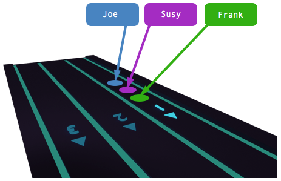
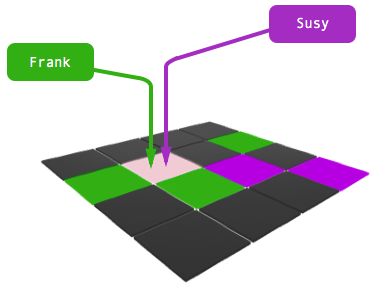

Alexander Gustafson, June 2015
The purpose of this seminar project is to become familiar with writing concurrent programs in c. The challenge is to manage resources that multiple clients can access simultanously in a way that neither blocks the client nor results in race conditions or deadlocks. However, any attempt to protect an individual resource should not block the system as a whole.
The Game has two main critical sections where race conditions or deadlocks can occur.
Upon Joining the game if the player count test and increment methods are not atomic, players might wait indefinitely even though there are enough to start.
Game cannot start because of deadlock
If multiple players attempt to access the same cell simultaneously a potential race condition could occur.
Multiple players taking same cell
The join process is made atomic using mutexes with condition variables. First a thread acquires the mutex lock, then waits on the condition until it updates. While waiting, other threads are able to acquire the lock. The incrementing and evaluating of the player count can be made atomic so that race conditions do not occur. While one thread is waiting other threads my enter the critical section, incrementing and evaluating, so no deadlocks occur.
pthread_cond_t ready = PTHREAD_COND_INITIALIZER;
pthread_mutex_t lock = PTHREAD_MUTEX_INITIALIZER;
int join_game()
{
pthread_mutex_lock(&lock);
if (--join_countdown > 0)
pthread_cond_wait(&ready, &lock);
pthread_mutex_unlock(&join_lock);
pthread_cond_signal(&ready);
return 1;
}
The take process is simpler. It needs no condition variable, but it uses the pthread_mutex_trylock method to test the lock status before attempting to acquire it. In this way clients are notified that they are not able to currently take the cell.
int request_cell_lock(int x, int y)
{
if (get_cell(x, y) == NULL) {
return -1;
}
return pthread_mutex_trylock(
&get_cell(x, y)->lock
);
}